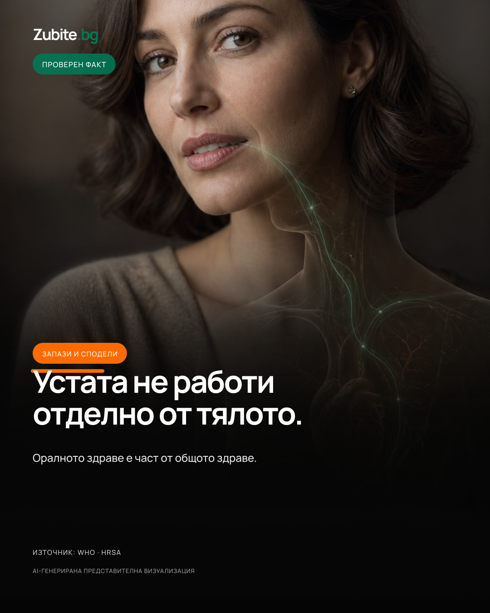
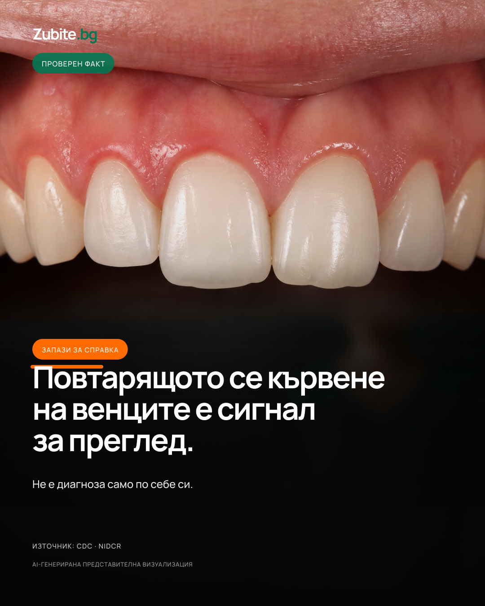
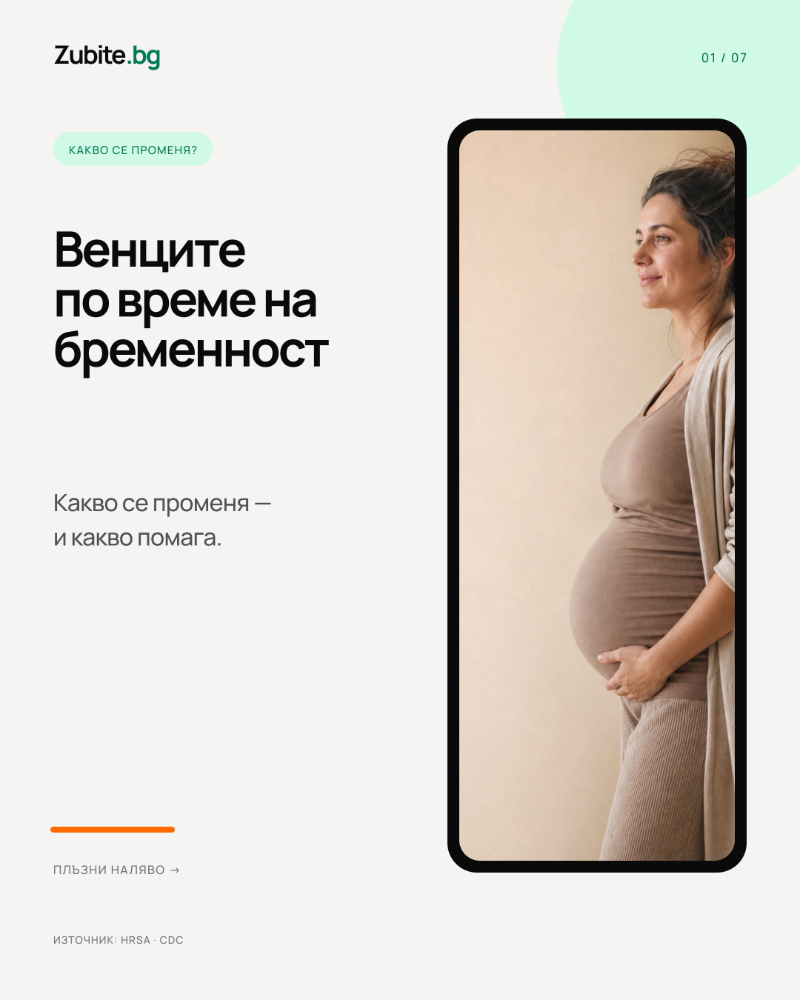
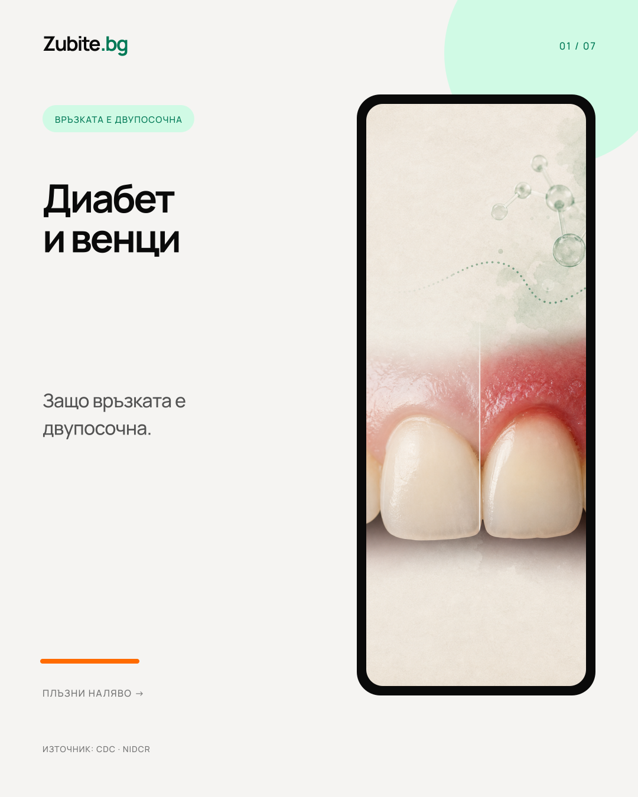
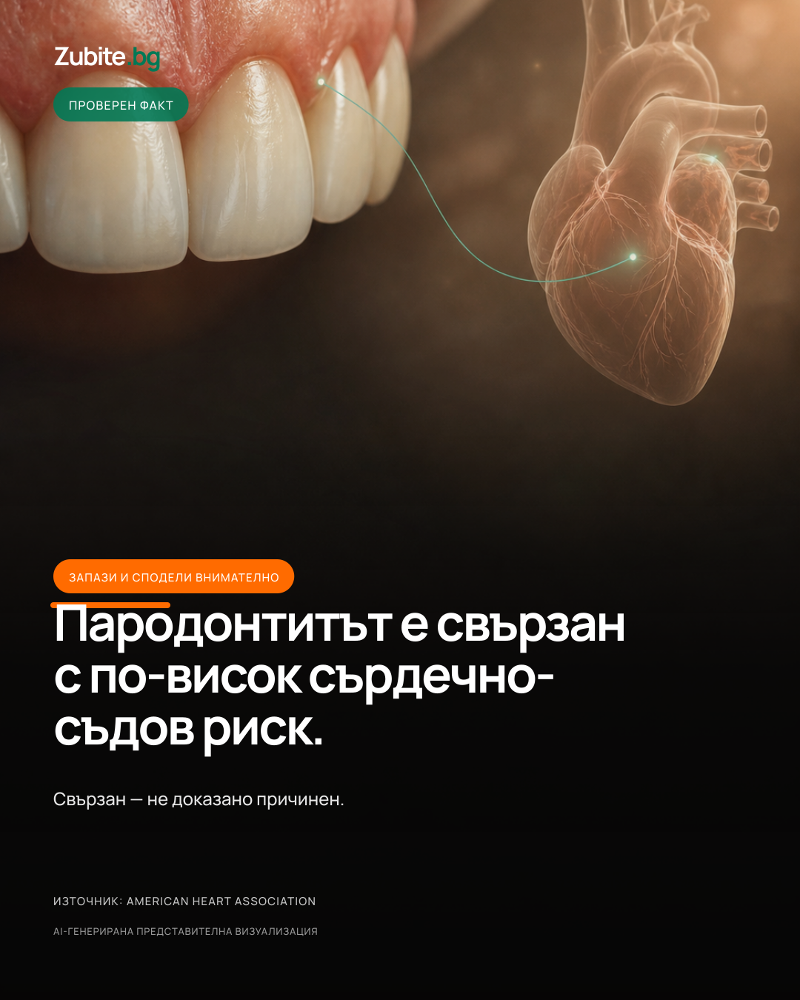
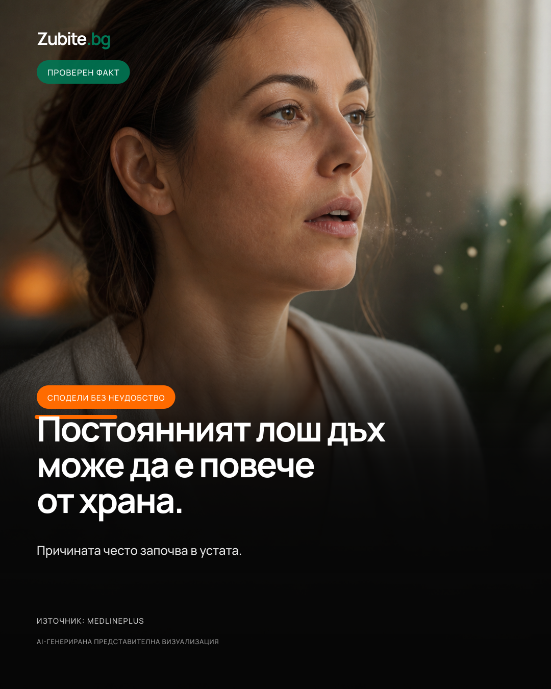
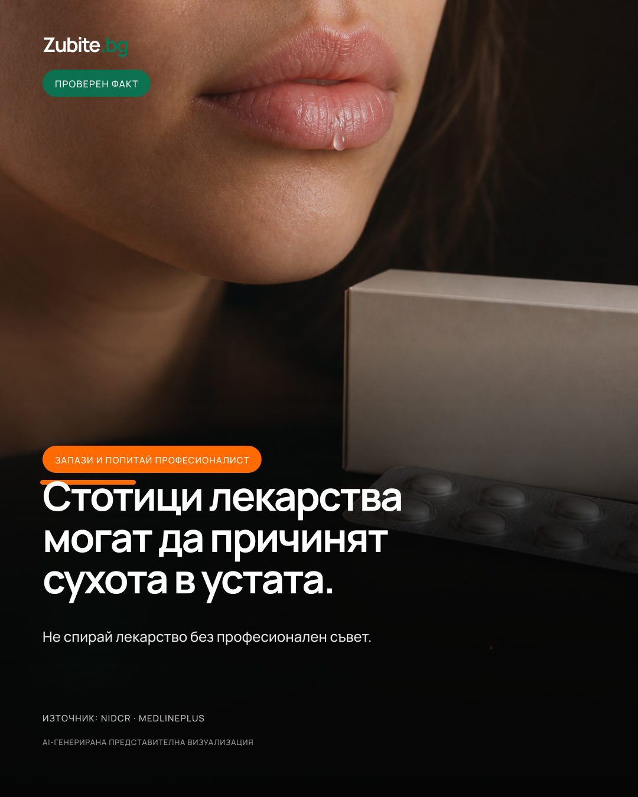
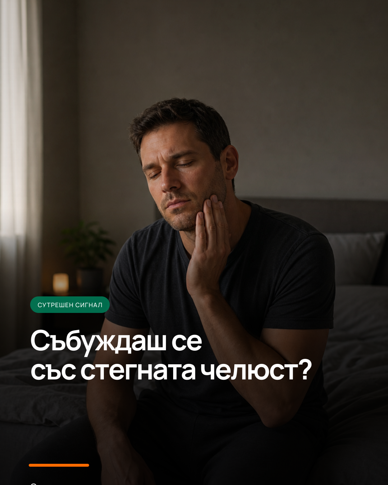
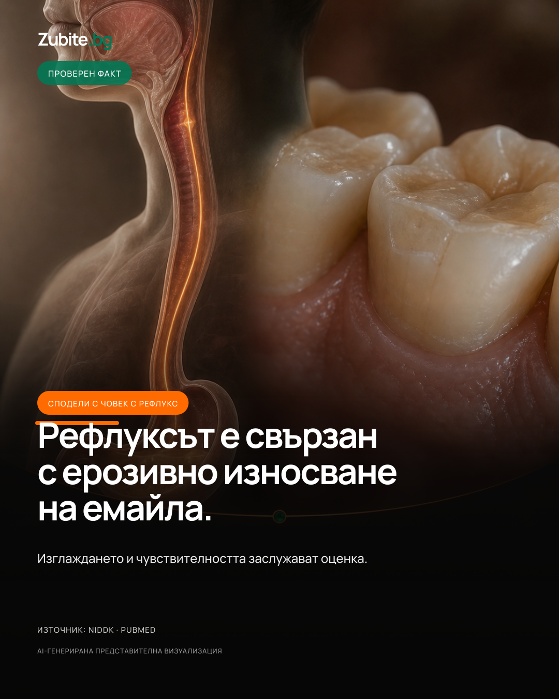
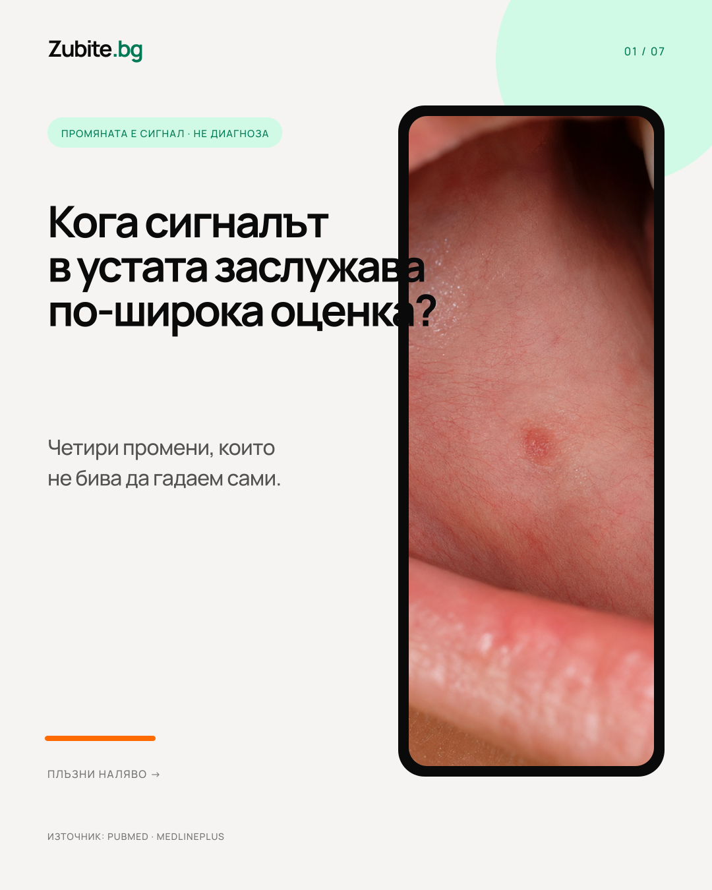

2026-08-04 · Hyperreal Fact
Зъбите не са отделени от тялото
Запази и сподели
Първа готова социална серия · 4–13 август 2026 · предложен час 19:30 · Europe/Sofia

Запази и сподели

Запази за справка

Сподели с бъдеща майка

Запази за следващия преглед

Запази и сподели внимателно

Сподели без неудобство

Запази и попитай професионалист

Запази, ако се будиш със стегната челюст

Сподели с човек с рефлукс

Запази: промяната е сигнал, не диагноза